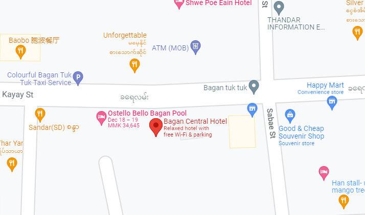
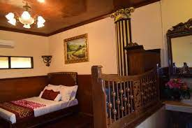

Address- Nyaung Oo, Bagan Nan Myint Tower, Near, Min Nanthu Village, 05231
Contact- 09 977 899 480
Aureum Palace Hotel & Resort Bagan offers comfortable rooms and a day spa, and is situated within a 10-minute drive from the Nyaung U Airport. It also features an outdoor pool and a sauna.
This modern hotel provides a 24-hour reception, a coffee bar and an airport shuttle. A fitness center is available to those wishing to keep active while travelling.
Aureum Palace Hotel & Resort Bagan offers 114 rooms, all of which are fitted with a hair dryer and a mini bar.
The hotel provides easy access to Bagan. Tours and other travel arrangements can be made at the tour desk.
Bagan Central Hotel


Map
Room
Price- 18 USD to 44 USD (3**** MMK to 78*** MMK)
Rating- 3/5 according to google
Breakfast- Free
Wifi- Free
Pets- allow on request. Charges may apply
Address- No.15/16, Corner Of Khayay, Bagan, Myanmar
Contact- +95 616 5265
Check in/out- 24 hours
With a stay at Bagan Central Hotel in Bagan, you'll be a 3-minute walk from Nanpaya and within a 5-minute drive of Gawdawpalin Temple. Featured amenities include complimentary newspapers in the lobby, a 24-hour front desk, and luggage storage. A roundtrip airport shuttle is provided for a surcharge (available 24 hours), and free self parking is available onsite. There is also an outdoor garden, a bar and an bicycle rental service and even surrounded by 5 restaurants nearby so you can travel without wasting your time.
Travel Tips
Because Bagan is so hot, you'll want to wear light, airy and breathable clothes. You'll also want to keep in mind that entering the largest temples will require covering shoulders and usually covering legs (both men and women). you’re going to have to take off your shoes for all of the temples you visit. If you are visiting during the cooler months (December and January), take a thin jacket with you. It gets cold at night.